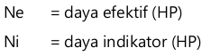
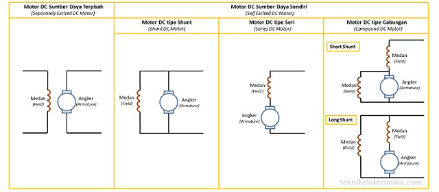

MOTOR LISTRIK DC


Motor DC/arus searah, sebagaimana namanya, menggunakan arus langsung yang tidak langsung/direct-unidirectional. Motor DC digunakan pada penggunaan khusus dimana diperlukan penyalaan torsi yang tinggi atau percepatan yang tetap untuk kisaran kecepatan yang luas.memperlihatkan sebuah motor DC yang memiliki tiga komponen utama:
- Kutub medan.
Secara sederhana digambarkan bahwa interaksi dua kutub magnet akan menyebabkan perputaran pada motor DC. Motor DC memiliki kutub medan yang stasioner dan dinamo yang menggerakan bearing pada ruang diantara kutub medan. Motor DC sederhana memiliki dua kutub medan: kutub utara dan kutub selatan. Garis magnetik energi membesar melintasi bukaan diantara kutub-kutub dari utara ke selatan. Untuk motor yang lebih besar atau lebih komplek terdapat satu atau lebih elektromagnet. Elektromagnet menerima listrik dari sumber daya dari luar sebagai penyedia struktur medan. - Dinamo.
Bila arus masuk menuju dinamo, maka arus ini akan menjadi elektromagnet. Dinamo yang berbentuk silinder, dihubungkan ke as penggerak untuk menggerakan beban. Untuk kasus motor DC yang kecil, dinamo berputar dalam medan magnet yang dibentuk oleh kutub-kutub, sampai kutub utara dan selatan magnet berganti lokasi. Jika hal ini terjadi, arusnya berbalik untuk merubah kutub-kutub utara dan selatan dinamo. - Kommutator.
Komponen ini terutama ditemukan dalam motor DC. Kegunaannya adalah untuk membalikan arah arus listrik dalam dinamo. Kommutator juga membantu dalam transmisi arus antara dinamo dan sumber daya.
- Kelebihan Motor DC
Keuntungan utama motor DC adalah dalam hal pengendalian kecepatan motor DC tersebut, yang tidak mempengaruhi kualitas pasokan daya. Motor ini dapat dikendalikan dengan mengatur :- Tegangan kumparan motor DC – meningkatkan tegangan kumparan motor DC akan meningkatkan kecepatan
- Arus medan – menurunkan arus medan akan meningkatkan kecepatan.
- Jenis-Jenis Motor DC/Arus Searah

- Motor seri.
Motor seri merupakan motor yang memiliki armature yang dihubungkan secara seri dengan field coil. Motor jenis ini memiliki karakteristik torsi yang tinggi pada putaran awal. Motor listrik seri memiliki karakteristik torsi yang terbalik dengan kecepatan. Sehingga pada kecepatan rendah, torsi yang dihasilkan akan tinggi, begitu juga sebaliknya torsi yang kecil akan diperoleh kecepatan yang tinggi. - Motor shunt
Merupakan motor yang armature dan field coil terhubung secara parallel. Pengaturan motor ini lebih mudah dibandingkan dengan motor seri. Krakteristik motor shunt adalah kecepatan konstan tidak tergantung pada beban dan cocok untuk penggunaan peralatan dengan beban awal yang rendah, seperti peralatan mesin. Kecepatan pada motor shunt dapat dikendalikan dengan memasang tahanan dalam susunan seri dengan dinamo untuk mengurangi kecepatan atau dengan memasang tahanan pada arus medan untuk menambah kecepatan. - Motor DC Compound/Gabungan.
Motor DC compound merupakan gabungan motor seri dan shunt. Pada motor compound, gulungan medan (medan shunt) dihubungkan secara paralel dan seri dengan gulungan dinamo. Sehingga, motor compound memiliki torsi penyalaan awal yang bagus dan kecepatan yang stabil. Makin tinggi persentase penggabungan (yakni persentase gulungan medan yang dihubungkan secara seri), makin tinggi pula torsi penyalaan awal yang dapat ditangani oleh motor ini.
- Motor seri.